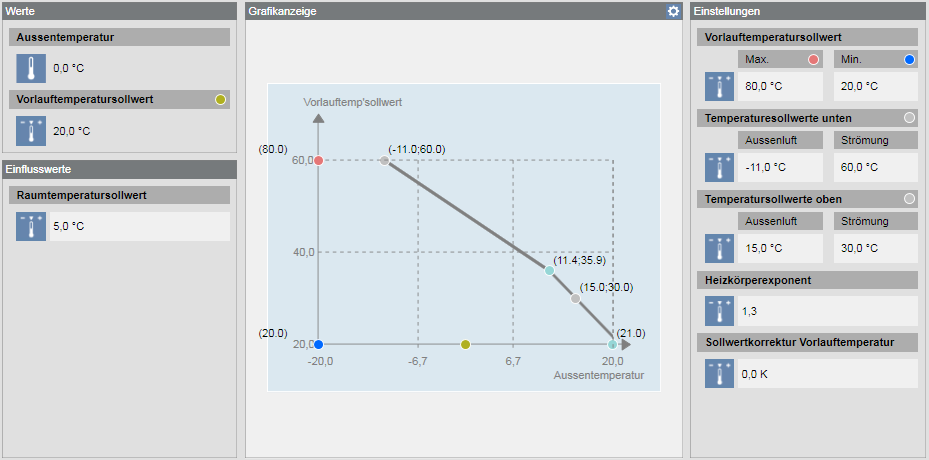

Adapting Heating Curve Graphic
Scenario
Default values are already saved to the library for the graphical depiction of the heating curve. The default values can be customized by project for each heating curve. The heating curve can be adapted in operating mode by clicking in the Graphics display header. General information on Desigo PX automation stations is available at Desigo PX

Prerequisites
- System Manager is in Engineering mode.
- The System Browser is in Management View.

NOTE:
The same workflows can also be used for Char Configuration, Summer/winter compensation and TFlCtlHC configuration.
Overview
1 | Creating a Project Library |